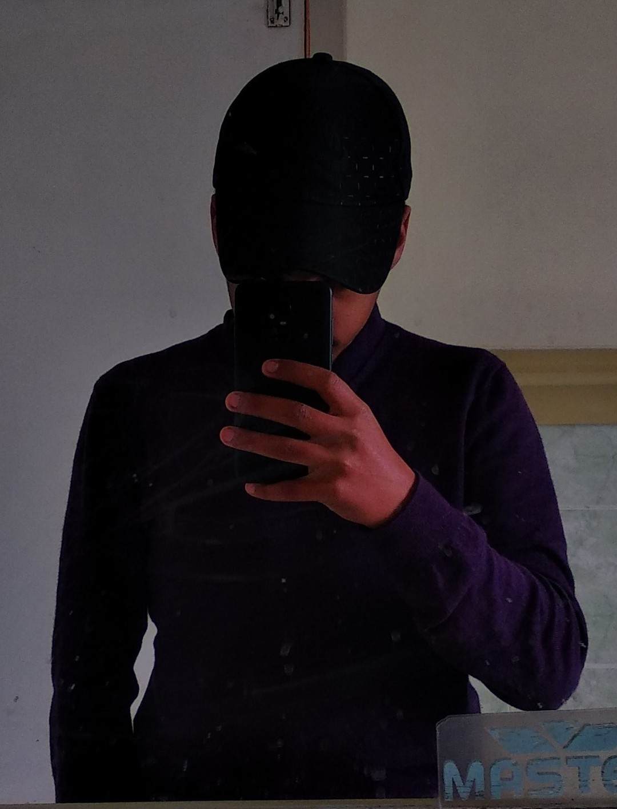

|  |
Muhammad Hussain Jan®Web-Developer and Student 𝕀’𝕞 𝕒 𝕤𝕖𝕝𝕗-𝕥𝕒𝕦𝕘𝕙𝕥 𝕡𝕣𝕠𝕘𝕣𝕒𝕞𝕞𝕖𝕣 𝕡𝕒𝕤𝕤𝕚𝕠𝕟𝕒𝕥𝕖 𝕒𝕓𝕠𝕦𝕥 𝕨𝕖𝕓 𝕕𝕖𝕧𝕖𝕝𝕠𝕡𝕞𝕖𝕟𝕥 𝕒𝕟𝕕 𝕔𝕠𝕟𝕥𝕚𝕟𝕦𝕠𝕦𝕤 𝕝𝕖𝕒𝕣𝕟𝕚𝕟𝕘. |
| Python🐍: | ⭐⭐⭐⭐⭐ |
| HTML: | ⭐⭐⭐⭐⭐ |
| CSS: | ⭐⭐⭐⭐ |
| Problem Solving: | ⭐⭐⭐⭐ |
| Continous Learning: | ⭐⭐⭐⭐ |
I’m currently focused on HTML and CSS, building web projects, and exploring new programming languages. I spend 7–8 hours daily learning, experimenting, and improving my skills.
My name is XXai, and I am a 15-year-old aspiring businessman from Islamabad, Pakistan. I am currently developing my skills in programming and sports to build a strong foundation for my future. I have a passion for technology and enjoy watching crime thrillers and hacker-themed movies. Currently, I am learning Python, HTML, and CSS, and I created this webpage to practice my coding. I look forward to expanding my web development skills in the future.
I’m always open to new projects, collaborations, or just to talk code